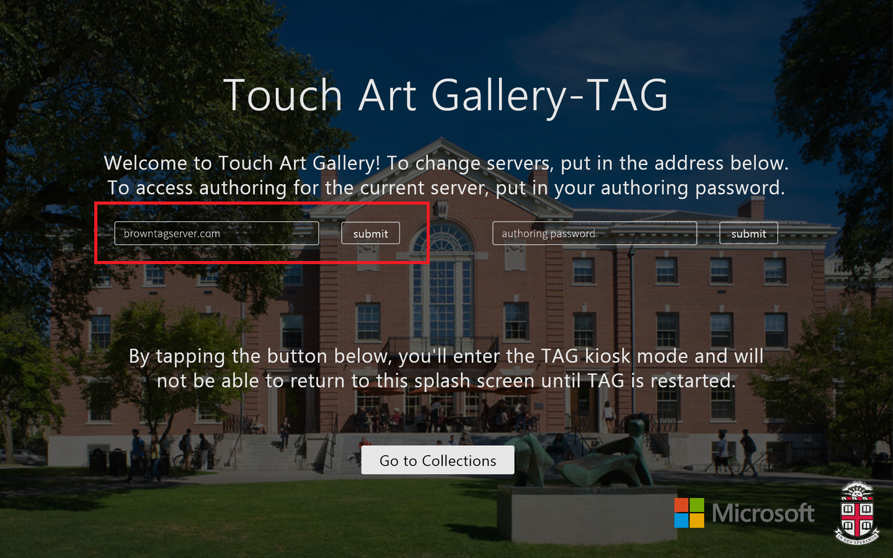

Welcome to the Touch Art Gallery Setup guide. If you are interested in
embedding the TAG web app, using the TAG authoring mode, troubleshooting, or installing
a TAG server, you are in the right place! The content here is meant to be easy to follow;
if you find something confusing or incorrect, we would appreciate any feedback at brown.touchartgallery@outlook.com. There is also a list of features under active development at the bottom, which
may be useful if you are contemplating using Touch Art Gallery. If you have any
ideas for new features, or if you have noticed any erratic functionality, please email
us; we would love to hear from you!
The TAG Windows app is available in the Windows App Store
here. If you are using a Windows 8/8.1 machine, you should be able to install directly from there.
By default, TAG connects to the Brown Graphics Lab demo server, which has a selection of demo
content to explore. To explore content on another server, please see the next section.
To browse the contents of one of these servers, you can use the change servers by entering
the corresponding server address (e.g."browntagserver.com") given above in the change server input box.

start page, change server input box indicated
The
TAG web application is available for download and can be embedded in an existing site using the instructions below.
- Download the source here
-
Uncompress the downloaded .zip file. This may happen automatically after you download and
click on the file, or you may need to right-click on the file in the finder or file explorer
-
Move the resulting TAG directory to the desired location within your site, say
"webroot/a/b/TAG_WebApp"
-
Make sure the TAG directory and its contents have the proper permissions. Directories
should be world-executable (e.g., "chmod 755"), and files should be world-readable (e.g., "chmod 644").
- In your site (webroot/site.html), include the TAG/TAG-embed.js script:
<script src='./a/b/TAG/TAG-embed.js'></script>
-
Also in your site, set up a div in which you would like to embed TAG. As an example, you can
take a look at TAG/demo.html, which sets up a div with id "tagContainer":
<div id='tagContainer'
style='margin-left:100px;margin-top:50px;'>
</div>
-
You can now use the "TAG" function in your site. As an example, you can take a look at TAG/demo.html.
A snippet from this file is below for reference:
<script src='TAG-embed.js'></script>
<script>
window.onload = load;
function load() {
TAG({
path: '',
containerId: 'tagContainer',
serverIp: 'browntagserver.com',
width: '1000px',
height: '500px'
});
}
</script>
The TAG web app is designed to be embedded in your site with minimal interference to the
rest of the page.
You can customize your TAG web app embedding with the following options, which can be
specified in the call to TAG as above:
path (default = "")
The relative path to the TAG directory from your site. For example, following the setup in the
instructions above, where TAG resides in the webroot/a/b directory and the site resides at
webroot/site.html, you should specify:
path: 'a/b/TAG_WebApp'
containerId (default = "tagContainer")
The ID of the div in which you would like to embed TAG. For example, above, we explicitly specify:
containerId: 'tagContainer'
serverIp (default = "browntagserver.com")
The ip address of the TAG server to which you would like your embedding to connect. The default is
the TAG demo content server. To connect to the Seattle Art Museum's server, for example, you could
specify:
serverIp: 'tag.seattleartmusem.org'
width (default = width of containing div or "740px")
The desired width of the TAG embedding in pixels. It defaults to the width of the containing
div (if specified) or "740px" if the containing div doesn't have a specified width. Note that
TAG will always have a 16:9 aspect ratio no matter the specified dimensions; it will fill as
much space as possible under the aspect ratio, height, and width constraints. Example:
width: "1000px"
height (default = height of containing div or "460px")
The desired height of the TAG embedding in pixels. It defaults to the height of the containing
div (if specified) or "460px" if the containing div doesn't have a specified height. Note that
TAG will always have a 16:9 aspect ratio no matter the specified dimensions; it will fill as
much space as possible under the aspect ratio, height, and width constraints. Example:
height: "500px"
hiddenCollections (default = [])
An array of IDs for collections you would like to hide in this embedding. This may be helpful
if you have several collections published on a server but only one or two of them are relevant
to a particular site. The IDs can be obtained by navigating to the collections tab in the authoring
mode; an ID is listed at the bottom of the right-most column when your collection is selected.
Example:
hiddenCollections: [
'e53b2104-7a2b-432e-81c8-31a14f00f9ce'
] // hides "Getty Museum Collection" on TAG demo server
idleDuration (default = 0)
If specified and non-zero, this controls the length of a timer (in milliseconds) that will reset
TAG to the collections page if no meaningful interaction has been detected. Example:
idleDuration: 120000 // two minutes
interpretURLParams (default = true)
If true, TAG users can effectively link to certain pages in your embedding by supplying some
extra query parameters in your site's URL. This is enabled by default. Example:
interpretURLParams: false // disable linking
urlToLoad (default = '')
If specified, TAG will parse this URL as if it were given as the URL of your page and
the interpretURLParams option were set to true. This allows you to start TAG to a specific
page (e.g., the tour player with a particular tour playing) by default when users visit
your site with its normal URL. You can obtain one of these URLs by clicking on one of several
"link" buttons throughout the web app. Specifying this option overrides an interpretURLParams=false
value. Example:
urlToLoad: 'http://localhost:8888/tag2/TAG/embeddingDemo.html \
#tagpagename=tour&tagguid=3a4e3a92-3048-48b8-88a2- \
b22b821766ff&tagonlytour=false&tagserver= \
browntagserver.com'
Here are some notes on
setting up the necessary SQL Server software and installing the TAG Server application. Please download the current version of the TAG server application here:
server installer.
Tap on the "Collections" tab on the left column, select your collection in the middle column, and in the
right column below the preview window, you'll see a button that says "Manage Collection." You can tap on
this to choose artworks to include in the collection. If your collection has not yet been created, the "New"
button at the top of the middle column will create a new collection.
First, navigate to the "Associated Media" tab in the authoring mode. You can import new associated
media (images, audio clips, or videos) by tapping on the "Import" button at the top of the middle column.
When your media have been imported, you can tap on the "Associate to Artworks" button to associate a particular
image/audio/video. Associations can also be managed from within the "artwork editor," which can be accessed
by navigating to the "Artworks" tab, selecting the desired artwork, and tapping "Enter Artwork Editor." Once
in the artwork editor, the "Add/Remove Media" button will allow you to pick from all available media, and clicking
on a media thumbnail below the "Add/Remove" button will allow you to edit specific media.
We are working on providing a server-side video converter, which should fix cross-browser compatibility
issues for any videos imported after this feature is in place. In the meantime, we recommend using TX264,
a free H264 converter which will help optimize your files for web playback while also converting your video
to a streaming-friendly MP4 file. Just run your video file through TX264 first and then upload as usual via
TAG.
TX264 is available
here.
To run TX264 with the proper settings, you can use the .pdo file
here, which contains a standard
configuration for web MP4s. After extracting TX264, place the .pdo file into the PreDefs directory
inside the TX264 directory and start TX264. From the drop-down menu labeled "Pre-defined", select
the "standard mp4 format tag" option, and click the arrow button next to the menu to apply the settings.
To fix quality issues you can increase the video bitrate option to 3000-6000 (higher is better but will
result in a larger file).
If you would prefer not to re-upload your video into TAG, you can run this conversion on the machine
running your server. To find the relevant video file on your server, search in the TAGServerRepo/Images
directory. You can then replace the existing file with the converted version.
As above, make sure that the format and encoding of your audio file
are appropriate for Internet Explorer. Try using an audio converter to convert your file to .mp3 format. Even if your video is already a .mp3 file, it may have been
encoded incorrectly. Using an audio converter should correct the encoding and allow you to upload and play your audio file properly. You can use a free audio converter
provided in the
Miro Video Converter.
The uploading tool in TAG converts incoming images to the Microsoft Deep Zoom format and then stores them in the C:\TAGServerRepo directory on whichever
computer is running your instance of the TAG Server. If an image will not upload directly through TAG, you can recreate this process using Microsoft's Deep Zoom
Composer application, which can be downloaed free of charge
here. After
downloading Deep Zoom Composer, you can open it, create a new "project," and import the artwork you would like to bring into TAG. After you fix the composition to your
liking and export the image, it will be exported to the directory listed in the right pane of the Composer application. Once you locate the output files in the
"GeneratedImages" directory (there will be four entries -- dzc_output_files, dzc_output.xml, scene.xml, and SparseImageSceneGraph.xml -- representing the Deep Zoom image),
copy them into C:\TAGServerRepo (you can create a subdirectory for your image). Now, you will want to use the paths to these files and directories to point TAG to your
artwork. This can be done by first importing a "dummy" artwork into TAG, then using the "Document Manager" button in the TAG Server GUI. If you right-click on the dummy
artwork listed in the Document Manager, you will be given options to edit metadata about the artwork, including the path TAG uses to locate it. You can insert the paths
to your artwork here.
Tap the "Multi-Select" button above the track titles. Once it is highlighted, you can select multiple
green/gray display boxes from as many different tracks as you want. Then you can start moving them
or changing their start and end points, and they will all move in synch. They may stop moving because
of other display boxes in the way. To manipulate keyframes, you will have to deselect the multi-selected
displays by tapping outside a display.